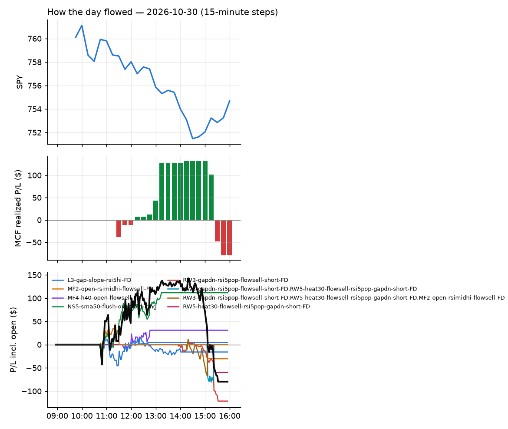
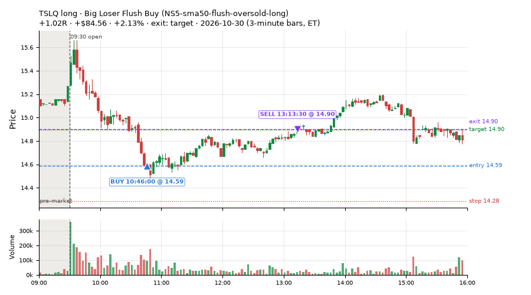
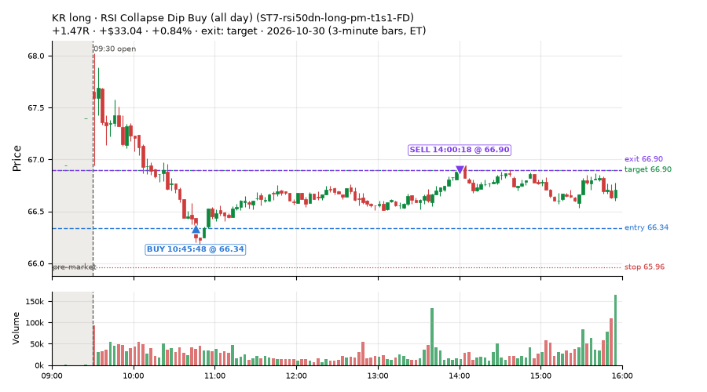
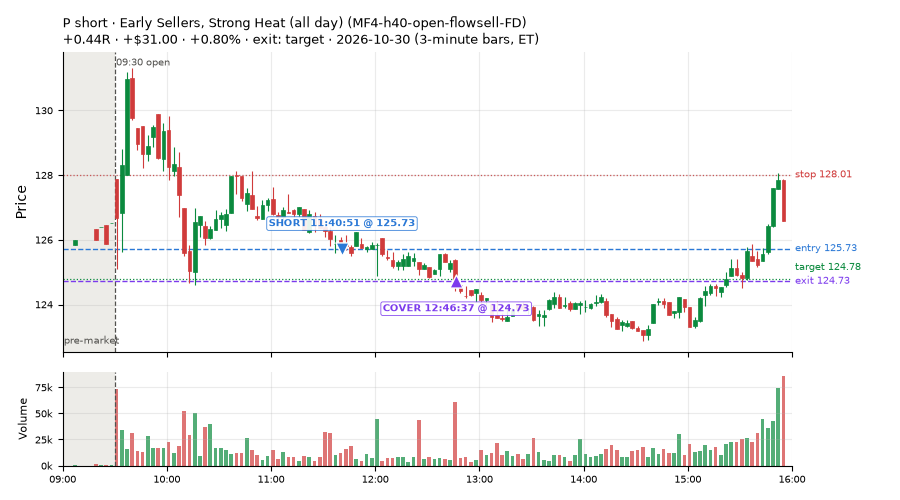
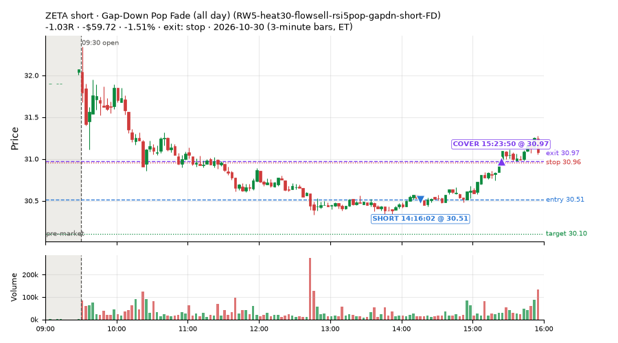
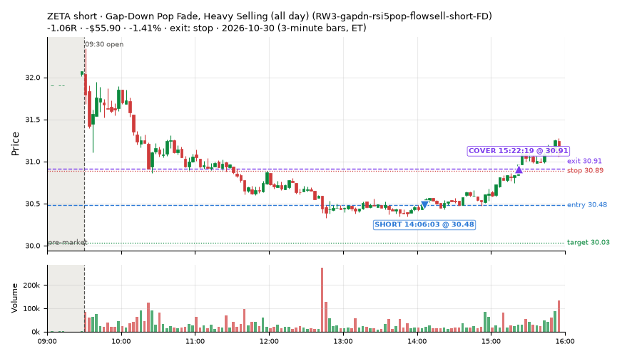
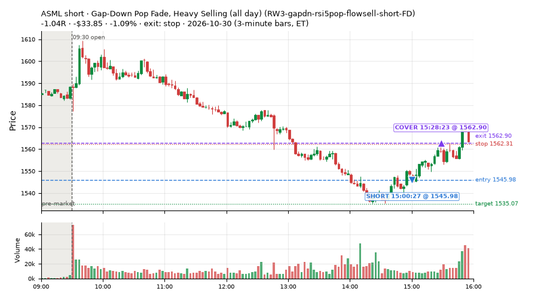
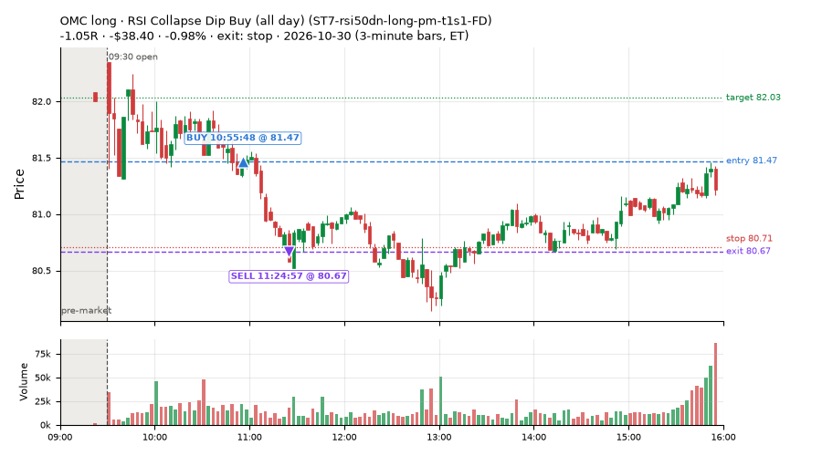
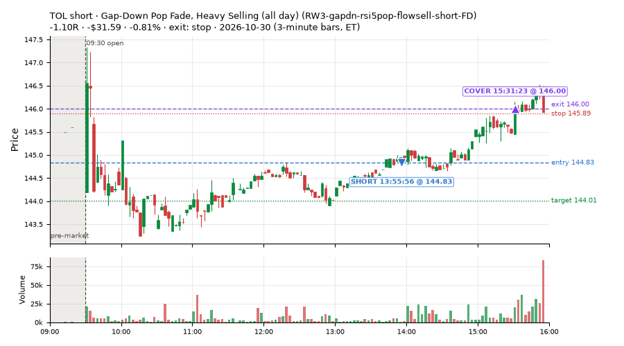

15 trades · win rate 47% · P/L $-79.55
PROBATION: no live setup has passed both locked test periods. 10 owner-directed setups added 2026-10-08 (MarcoFlow top 5 + 5 new), untested live. RW6G1 (RW6 + VWAP band guard) added 2026-10-09, probation.

| Symbol | Setup | Side | In | Out | Entry | Exit | Exit reason | % gained | P/L |
|---|---|---|---|---|---|---|---|---|---|
| TSLQ | Big Loser Flush Buy (NS5-sma50-flush-oversold-long) | long | 10:46 | 13:13 | 14.59 | 14.90 | target | +2.13% | $84.56 |
| KR | RSI Collapse Dip Buy (all day) (ST7-rsi50dn-long-pm-t1s1-FD) | long | 10:45 | 14:00 | 66.34 | 66.90 | target | +0.84% | $33.04 |
| P | Early Sellers, Strong Heat (all day) (MF4-h40-open-flowsell-FD) | short | 11:40 | 12:46 | 125.73 | 124.73 | target | +0.80% | $31.00 |
| Symbol | Setup | Side | In | Out | Entry | Exit | Exit reason | % lost | P/L |
|---|---|---|---|---|---|---|---|---|---|
| ZETA | RW5-heat30-flowsell-rsi5pop-gapdn-short-FD | short | 14:16 | 15:23 | 30.51 | 30.97 | stop | -1.51% | $-59.72 |
| ZETA | RW3-gapdn-rsi5pop-flowsell-short-FD | short | 14:06 | 15:22 | 30.48 | 30.91 | stop | -1.41% | $-55.90 |
| ASML | RW3-gapdn-rsi5pop-flowsell-short-FD | short | 15:00 | 15:28 | 1545.98 | 1562.90 | stop | -1.09% | $-33.85 |
| OMC | ST7-rsi50dn-long-pm-t1s1-FD | long | 10:55 | 11:24 | 81.47 | 80.67 | stop | -0.98% | $-38.40 |
| TOL | RW3-gapdn-rsi5pop-flowsell-short-FD | short | 13:55 | 15:31 | 144.83 | 146.00 | stop | -0.81% | $-31.59 |








Signal to fill: median 1s, 90th percentile 2s (15 trades). Bars close each minute; the order follows the bar close.
Best excursion (MFE): median 0.34R; worst (MAE) median 0.98R. 47% of trades never got +0.25R in our favour; 0 reached +1R and still closed at or below 0.
| Symbol | Setup | Best R | Worst R | Closed R |
|---|---|---|---|---|
| ZETA | MF2-open-rsimidhi-flowsell-FD | +0.34 | -1.03 | -1.00 |
| TOL | RW3-gapdn-rsi5pop-flowsell-short-FD | +0.17 | -1.10 | -1.10 |
| ZETA | RW5-heat30-flowsell-rsi5pop-gapdn-short-FD | +0.18 | -1.02 | -1.03 |
| ZETA | RW3-gapdn-rsi5pop-flowsell-short-FD | +0.12 | -1.13 | -1.06 |
| ROL | ST7-rsi50dn-long-pm-t1s1-FD | +0.16 | -0.98 | -1.02 |
| Entry time | Trades | Win | Avg R | P/L |
|---|---|---|---|---|
| 10:30-11:30 | 8 | 62% | +0.28 | $95.99 |
| 11:30-13:00 | 2 | 100% | +0.39 | $35.76 |
| 13:00-14:00 | 1 | 0% | -1.10 | $-31.59 |
| 14:00-16:00 | 4 | 0% | -1.03 | $-179.71 |
| Setup | Trades | Win | Avg R | Adj R (net of SPY) | P/L |
|---|---|---|---|---|---|
| Gap-Down Rebound Overbought Short (all day) (L3-gap-slope-rsi5hi-FD) | 1.0 | 100% | +0.34 | +0.33 | $4.76 |
| Early Sellers, Mid-High RSI (all day) (MF2-open-rsimidhi-flowsell-FD) | 1.0 | 0% | -1.00 | -1.09 | $-30.24 |
| Early Sellers, Strong Heat (all day) (MF4-h40-open-flowsell-FD) | 1.0 | 100% | +0.44 | +0.32 | $31.00 |
| Big Loser Flush Buy (NS5-sma50-flush-oversold-long) owner-directed; holdouts once: Sep-Oct -0.008R n73, Apr-Jun +0.002R n231 | 2.0 | 100% | +0.97 | +1.22 | $111.76 |
| Gap-Down Pop Fade, Heavy Selling (all day) (RW3-gapdn-rsi5pop-flowsell-short-FD) | 3.0 | 0% | -1.06 | -1.14 | $-121.34 |
| Gap-Down Pop Fade (all day) (RW5-heat30-flowsell-rsi5pop-gapdn-short-FD) | 1.0 | 0% | -1.03 | -1.03 | $-59.72 |
| RSI Collapse Dip Buy (all day) (ST7-rsi50dn-long-pm-t1s1-FD) | 6.0 | 50% | +0.05 | +0.72 | $-15.77 |
Market direction (SPY, beta 1) accounted for $-124.33 of today's $-79.55; the rest ($44.78) came from the setups themselves. Avg R net of SPY: +0.12 (incl. a hedge leg's cost; report only).
10 setups live today. Today: 105 signals, 15 taken, 0 lost because another setup held the symbol (0%). Since 2026-10-06 (19 sessions): 1279 signals, 747 taken, 87 lost to other setups (7%). Peak open positions today 8 of 77 slots. Earnings blackout removed 1871 symbols before scanning.
Simulated playing time (not live): 527 what-if trades of signals not taken, avg +0.10R, 60% winners; of them 87 lost to another setup (avg +0.01R).
Silent: intraday_momentum · Crowded out: MF4-h40-open-flowsell, MF3-open-flowsell-rsi5hi, MF5-flowsell-vwapup-rsi5hi · Starved: MF2-open-rsimidhi-flowsell
| Prio | Setup | Today sig / taken | Sessions | Signals / taken / trades | Taken/day | Expected/day | Lost to other setups | Lost to (setup n) | Top skip reasons | SIMULATED: not-taken n / avg R / win | Verdict |
|---|---|---|---|---|---|---|---|---|---|---|---|
| 1 | Gap-Down Pop Fade (all day) RW5-heat30-flowsell-rsi5pop-gapdn-short-FD | 2 / 1 | 11 | 89 / 70 / 70 | 6.36 | 12.79 | 0 | – | spread / quote / size 12, not shortable / shorts off 6, daily loss cap 1 | 19 / -0.13R / 42% | ok 31.8 entries/week |
| 2 | Gap-Down Pop Fade, Heavy Selling (all day) RW3-gapdn-rsi5pop-flowsell-short-FD | 7 / 3 | 11 | 75 / 52 / 52 | 4.73 | 13.59 | 1 | CWT14-failbrk-pdl-p10-lowvol-long 1 | not shortable / shorts off 12, spread / quote / size 10, symbol held by another setup 1 | 23 / +0.14R / 52% | ok 23.6 entries/week |
| 3 | Early Sellers, Mid-High RSI (all day) MF2-open-rsimidhi-flowsell-FD | 7 / 1 | 9 | 61 / 39 / 39 | 4.33 | 10.09 | 4 | RW5-heat30-flowsell-rsi5pop-gapdn-short-FD 4, RW3-gapdn-rsi5pop-flowsell-short-FD 4, MF2-open-rsimidhi-flowsell-FD 4 | not shortable / shorts off 10, spread / quote / size 8, symbol held by another setup 4 | 22 / +0.13R / 46% | ok 21.7 entries/week |
| 4 | Early Sellers, Strong Heat (all day) MF4-h40-open-flowsell-FD | 12 / 1 | 9 | 78 / 38 / 38 | 4.22 | 16.45 | 4 | RW5-heat30-flowsell-rsi5pop-gapdn-short-FD 4, RW3-gapdn-rsi5pop-flowsell-short-FD 4, MF2-open-rsimidhi-flowsell-FD 3 | not shortable / shorts off 19, spread / quote / size 14, symbol held by another setup 4 | 40 / -0.01R / 68% | ok 21.1 entries/week |
| 5 | RSI Collapse Dip Buy (all day) ST7-rsi50dn-long-pm-t1s1-FD | 10 / 6 | 5 | 14 / 9 / 9 | 1.80 | 2.17 | 0 | – | spread / quote / size 5 | 5 / +0.48R / 80% | slow 9.0 entries/week; ~7 weeks to 60 trades |
| 6 | Gap-Down Rebound Overbought Short (all day) L3-gap-slope-rsi5hi-FD | 17 / 1 | 1 | 17 / 1 / 1 | 1.00 | – | 0 | – | not shortable / shorts off 15, spread / quote / size 1 | 14 / +0.49R / 100% | slow 5.0 entries/week; ~12 weeks to 60 trades |
| 7 | Gap-Down Recovery Fade (all day) L3-gap-slope-fromopen-FD | 46 / 0 | 3 | 129 / 23 / 23 | 7.67 | – | 9 | L3-gap-slope-fromopen-FD 9 | not shortable / shorts off 83, spread / quote / size 14, symbol held by another setup 9 | 105 / +0.51R / 81% | ok 38.3 entries/week |
| 8 | Big Gainer Dip-and-Pop NS1-rsidip-rsi5pop-long | 0 / 0 | 17 | 15 / 12 / 12 | 0.71 | 0.92 | 0 | – | spread / quote / size 3 | 3 / +0.40R / 100% | slow 3.5 entries/week; ~17 weeks to 60 trades |
| 9 | Big Loser Flush Buy NS5-sma50-flush-oversold-long | 2 / 2 | 17 | 21 / 18 / 18 | 1.06 | 2.41 | 0 | – | spread / quote / size 3 | 3 / +0.92R / 100% | slow 5.3 entries/week; ~11 weeks to 60 trades |
| 10 | Early Sellers, Strong Heat MF4-h40-open-flowsell | 2 / 0 | 17 | 63 / 21 / 21 | 1.24 | 7.24 | 20 | MF4-h40-open-flowsell-FD 15, MF3-open-flowsell-rsi5hi-FD 4, MF3-open-flowsell-rsi5hi 3 | symbol held by another setup 20, spread / quote / size 12, not shortable / shorts off 10 | 42 / -0.06R / 62% | crowded-out 20 of 63 signals (32%) lost to setups already holding the symbol |
Every trade is attached as a CSV you can open and edit in Excel or Google Sheets. Live page: https://misiti15.github.io/MCF/live/